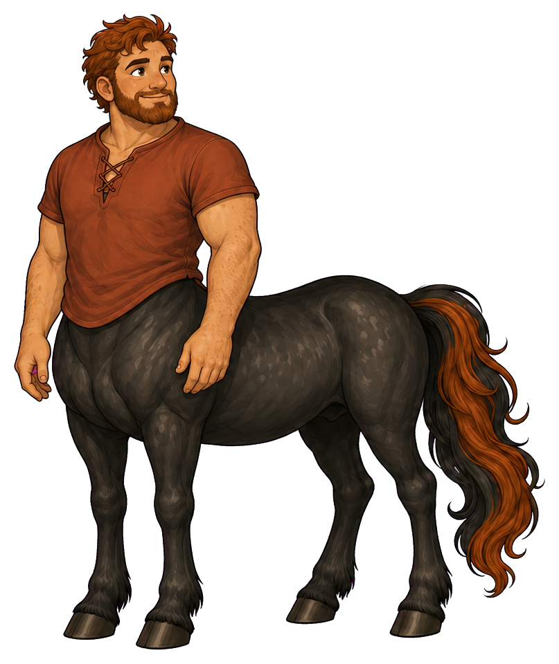
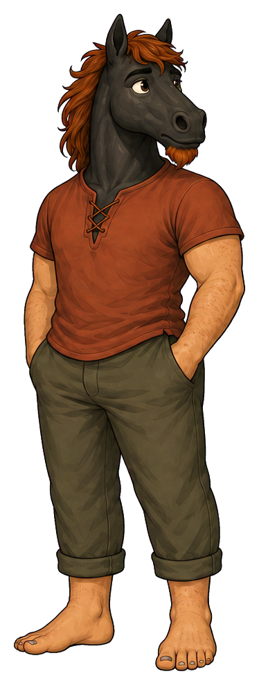
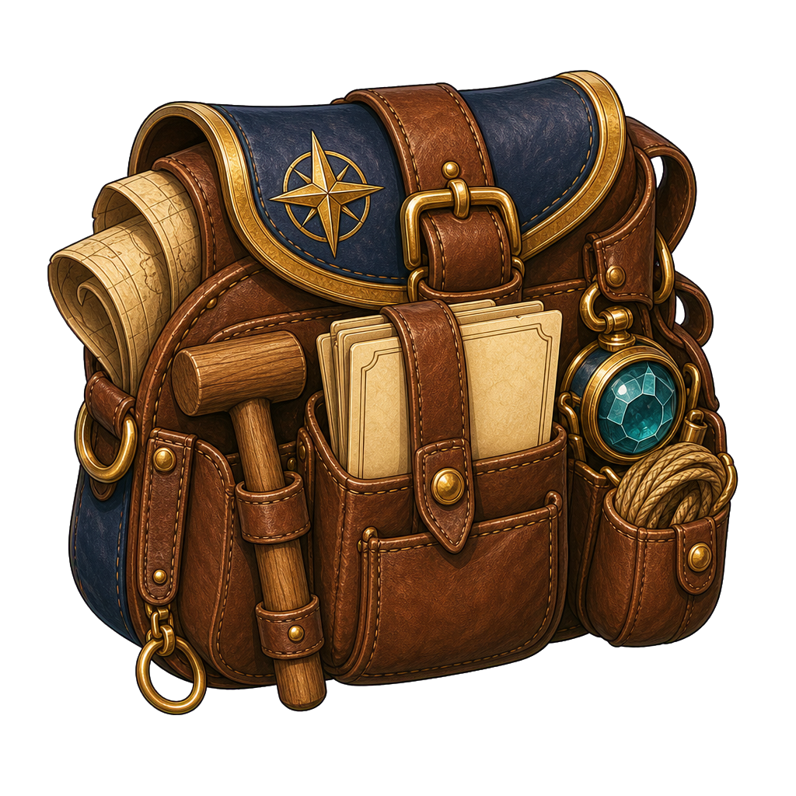
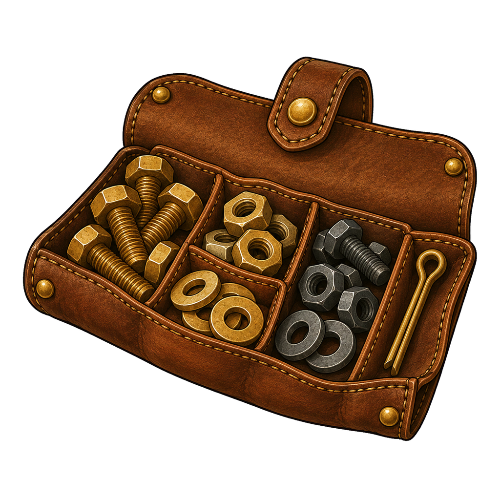
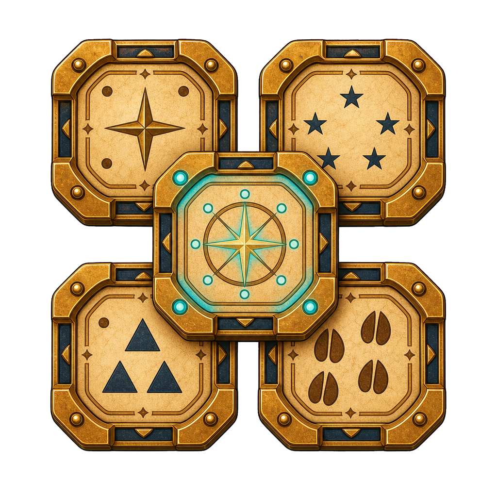
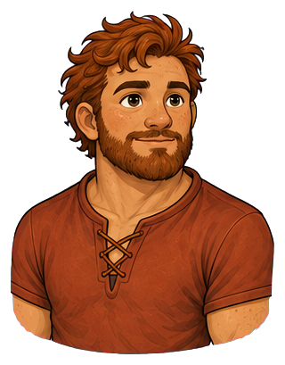
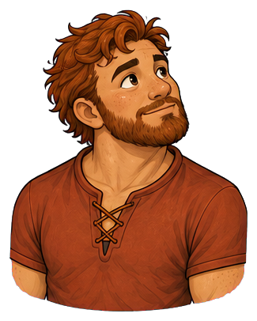
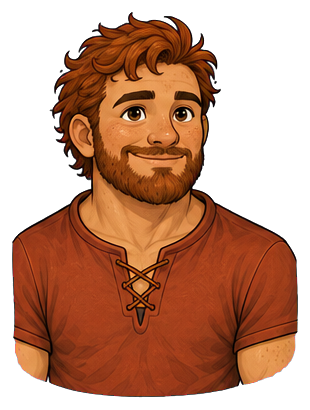
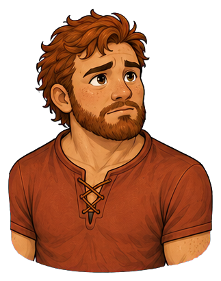
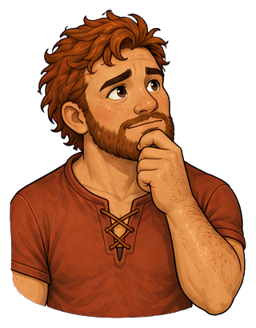

Platform engineer and practical builder
Bram
he/him
Bram makes important things dependable and difficult things understandable.


Sturdy, approachable, unflappable
Place in society
Something you can depend on
A skilled craftsperson whose credibility comes from keeping shared infrastructure alive rather than seeking public attention
“Show me where it actually breaks.”
At his best
Turns abstract plans into dependable working parts
Watch for
Dismisses possibilities that cannot yet be demonstrated

The agency lens
Two forms. One person.
The form reveals where Bram’s attention is centred—and whether he can shape what happens next.
Centaur · strengths in focus
“I can shape what happens next.”
Bram inspects the failure, makes its workings legible, and builds the smallest dependable repair. His patience gives other people room to learn. Practicality becomes a foundation for exploration rather than a gate that only finished ideas may pass.
- Strength
- Turns abstract plans into dependable working parts
- Posture
- Broad hands demonstrating a part; relaxed compact stance; tools available to everyone.
Reverse-centaur · pressure-captured
“The world is deciding who I am.”
After repeated overpromises, Bram starts treating every unfamiliar idea as another future incident. Discernment hardens into dismissal; experience becomes proof that nothing different will work. He folds his arms before anyone can build the test that might change his mind.
- Shadow
- Dismisses possibilities that cannot yet be demonstrated
- Posture
- Folded arms; toolkit closed; body blocking the workbench while an unfinished proposal waits.
Recognizable pressure points
- A delivery date is promised before he can inspect the system.
- Maintenance is treated as invisible work that will somehow happen later.
- He is asked to support a fragile dependency while its risks are waved away.
D&D-style characteristics
How Bram moves
The same person, with the same strengths, in both forms.
Tools for the journey
Inside Bram’s pack


Open means invitation to inspect or build; closed can signal withdrawal. Keep its scale practical.


Ordinary pieces that solve an exact problem. A few visible fasteners tell more than an enormous machine.

A repair whose construction can be explained. Use his hands to reveal how it holds.


Battered from use; a tactile aid for reasoning through connections, not a glowing supercomputer.
Folding toolkit, shield buckle, rope splice, brass logic tile. Pack only what the scene needs.
Emotional range
The face behind the role





Folds his arms when unconvinced; brightens immediately when someone brings real evidence
Direction notes for the five expressions
Attentive
square, relaxed stance and patient eye contact; reverse ears forward above a settled muzzle.
Curious
eyebrows rise, hands unfold and the body leans toward actual evidence; an ear tips toward the mechanism.
Happy
wry grin broadens when a repair works; warm eyes and an easy muzzle in reverse form.
Worried
arms fold, brow lowers and weight settles; keep the worry measured rather than brutish.
Thoughtful
beard or chin rubbed while tracing a fault; the copper chin tuft and hand-to-muzzle gesture echo this in reverse form.
Portraits follow the original identity references. View both complete expression sets →
Keep consistent across images
Identity in every frame
- Physical presence
- Short, compact, stocky, and densely muscled, with sturdy hands and an unhurried gait
- Defining appearance
- Light freckled skin, copper hair and beard, rust-red tunic, and a near-black horse coat with copper mane accents
Keep short compact stocky proportions, dense muscle, sturdy hands, light freckled skin, copper hair and beard, rust-red lace-neck tunic, near-black horse coat and copper accents in mane and tail. Reverse form has a near-black horse head with copper forelock and chin tuft, the same stocky human body, rust tunic and olive-brown trousers.
Centaur PNG ↓ · Reverse-centaur PNG ↓


Continuity boundaries and things to avoid
Do not stretch him into Mateo's tall heroic build, remove his freckles or beard, or make him a lumbering comic mechanic. Physical strength accompanies patience and intelligence. Machinery should not obscure his hands or face.
Both forms belong to the same person. Neither sadness nor happiness determines the form: a centaur can be worried and act with agency; a reverse-centaur can smile while seeking approval. Keep both forms dignified and fully clothed as shown. Body-art diagrams and added tattoos are excluded.
The original sheet anchors appearance. Pack contents and scene briefs extend the storytelling vocabulary; include only what the scene needs.
Personality and story foundation
The person behind the role
Bram trusts things he can inspect, repair, and explain. He is happiest beside a half-built mechanism with three friends and the wrong tool. His humour makes failure feel survivable, and his patience makes difficult systems teachable.
Bram learned that a repair is unfinished until someone else can understand it. Shared infrastructure taught him to respect ordinary parts, patient inspection and the person who will be on call after he leaves. He keeps a battered component that once solved a supposedly impossible failure as a reminder to look closely before declaring defeat.
- First impression
- Sturdy, approachable, unflappable
- Inner engine
- Wants important systems to work when people actually need them
- Voice
- Plainspoken, wry, generous with practical explanations
- Private delight
- Fixing the supposedly unfixable with an ordinary part
- Wants
- To make systems dependable enough that people can stop worrying about them and get on with their lives.
- Fears
- That an impressive promise will leave real people relying on a mechanism that fails when it matters.
- Inner contradiction
- He will patiently revive a broken machine but can lose patience with an idea that has not yet had a chance to become a prototype.
- Boundary
- He will try an imperfect experiment in a safe setting. He will not disguise an untested mechanism as reliable infrastructure.
The ensemble
Strengths in conversation
With Celeste
She explains the experience a structure must support. He tests the load and finds a buildable way to honour it.
With Ari
They disagree about sufficient evidence and share respect for honest tests. Either can find the flaw that changes the other's mind.
With Noor
Noor offers a possible future; Bram gives it a first testable component. Let imagination and craft both shape the prototype.
These are complementary tensions. Any character can lead, be mistaken, change their mind or need support.
Ready for storytelling images
Three scenes to begin with
Attach the original character sheet with a prompt. For ensemble scenes, attach each named character’s sheet as well. The brief fixes identity and intent while leaving room for composition.
Scene 01 · Centaur
A repair someone else can make
Beside a trail winch, Bram holds a small worn fastener where a companion can inspect it. The open toolkit rests within both people's reach. Use an eye-level three-quarter view that preserves his short, stocky silhouette and makes the shared lesson visible.
Image prompt and continuity notes
Character: Bram (he/him). Use the attached Bram reference sheet as the identity authority. Form: Centaur. Keep short compact stocky proportions, dense muscle, sturdy hands, light freckled skin, copper hair and beard, rust-red lace-neck tunic, near-black horse coat and copper accents in mane and tail. Reverse form has a near-black horse head with copper forelock and chin tuft, the same stocky human body, rust tunic and olive-brown trousers. Scene: Beside a trail winch, Bram holds a small worn fastener where a companion can inspect it. The open toolkit rests within both people's reach. Use an eye-level three-quarter view that preserves his short, stocky silhouette and makes the shared lesson visible. Style: warm illustrated mythic adventure, expressive ink contours, painterly shading, tactile materials and grounded light. Preserve anatomy: centaur = human head and torso joined to a four-legged horse body; reverse-centaur = horse head on a clothed human body with two human legs. Keep all limbs plausible. Preserve identity, build, clothing and markings across forms. Agency is conveyed through attention, posture and context, never through changing skin tone, body size or gender. No body art, readable text, labels, watermark or logos. Avoid: Do not stretch him into Mateo's tall heroic build, remove his freckles or beard, or make him a lumbering comic mechanic. Physical strength accompanies patience and intelligence. Machinery should not obscure his hands or face.
Scene 02 · Reverse-centaur
The unopened toolkit
Bram stands at a workbench with folded arms and a closed toolkit as Noor presents a rough model. His gaze rests on an old failed part. Show guarded concern and an interrupted collaboration, without making either person foolish.
Image prompt and continuity notes
Character: Bram (he/him). Use the attached Bram reference sheet as the identity authority. Form: Reverse-centaur. Keep short compact stocky proportions, dense muscle, sturdy hands, light freckled skin, copper hair and beard, rust-red lace-neck tunic, near-black horse coat and copper accents in mane and tail. Reverse form has a near-black horse head with copper forelock and chin tuft, the same stocky human body, rust tunic and olive-brown trousers. Scene: Bram stands at a workbench with folded arms and a closed toolkit as Noor presents a rough model. His gaze rests on an old failed part. Show guarded concern and an interrupted collaboration, without making either person foolish. Style: warm illustrated mythic adventure, expressive ink contours, painterly shading, tactile materials and grounded light. Preserve anatomy: centaur = human head and torso joined to a four-legged horse body; reverse-centaur = horse head on a clothed human body with two human legs. Keep all limbs plausible. Preserve identity, build, clothing and markings across forms. Agency is conveyed through attention, posture and context, never through changing skin tone, body size or gender. No body art, readable text, labels, watermark or logos. Avoid: Do not stretch him into Mateo's tall heroic build, remove his freckles or beard, or make him a lumbering comic mechanic. Physical strength accompanies patience and intelligence. Machinery should not obscure his hands or face.
Scene 03 · Centaur
Build the small version
At the same bench, Bram opens his toolkit and fixes one joint of Noor's rough model while Noor steadies it. Leave the rest unfinished. His raised brows and slight grin show that the evidence has earned another look.
Image prompt and continuity notes
Character: Bram (he/him). Use the attached Bram reference sheet as the identity authority. Form: Centaur. Keep short compact stocky proportions, dense muscle, sturdy hands, light freckled skin, copper hair and beard, rust-red lace-neck tunic, near-black horse coat and copper accents in mane and tail. Reverse form has a near-black horse head with copper forelock and chin tuft, the same stocky human body, rust tunic and olive-brown trousers. Scene: At the same bench, Bram opens his toolkit and fixes one joint of Noor's rough model while Noor steadies it. Leave the rest unfinished. His raised brows and slight grin show that the evidence has earned another look. Style: warm illustrated mythic adventure, expressive ink contours, painterly shading, tactile materials and grounded light. Preserve anatomy: centaur = human head and torso joined to a four-legged horse body; reverse-centaur = horse head on a clothed human body with two human legs. Keep all limbs plausible. Preserve identity, build, clothing and markings across forms. Agency is conveyed through attention, posture and context, never through changing skin tone, body size or gender. No body art, readable text, labels, watermark or logos. Avoid: Do not stretch him into Mateo's tall heroic build, remove his freckles or beard, or make him a lumbering comic mechanic. Physical strength accompanies patience and intelligence. Machinery should not obscure his hands or face.